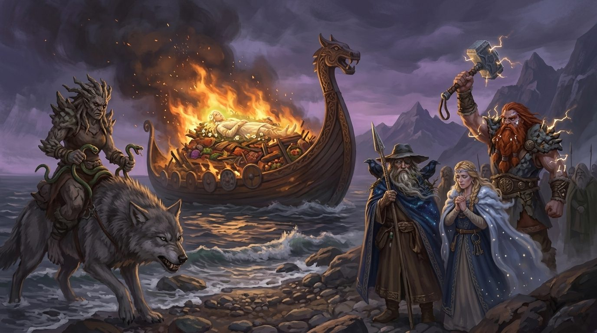
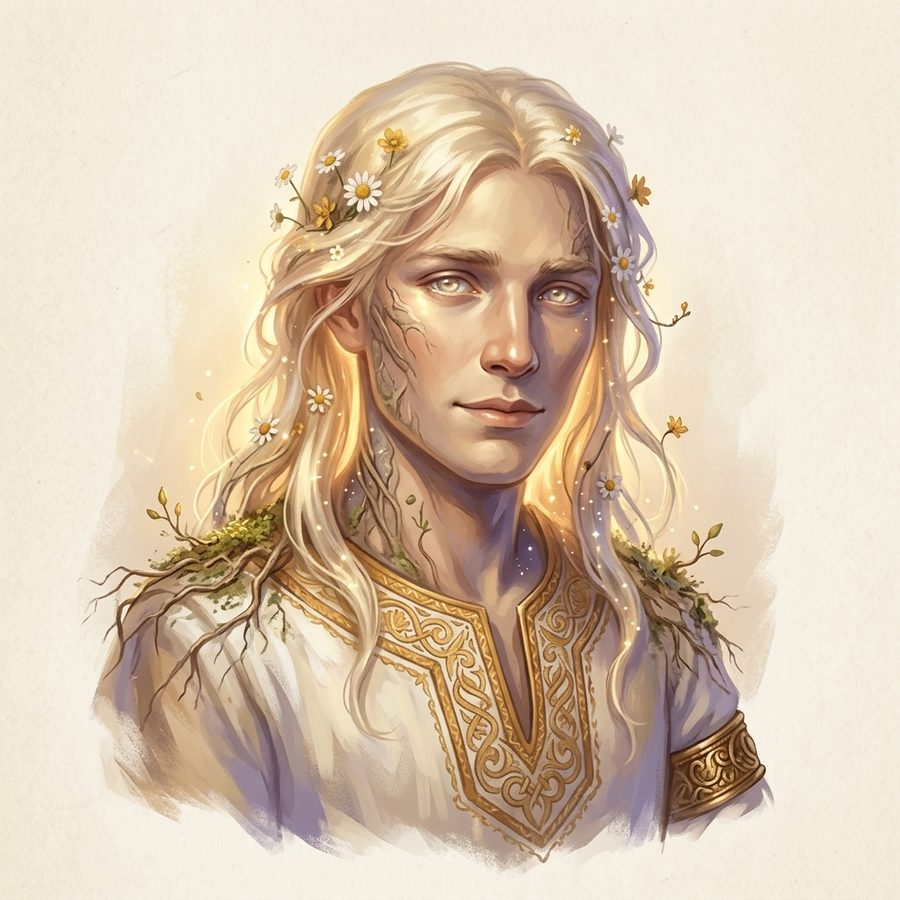
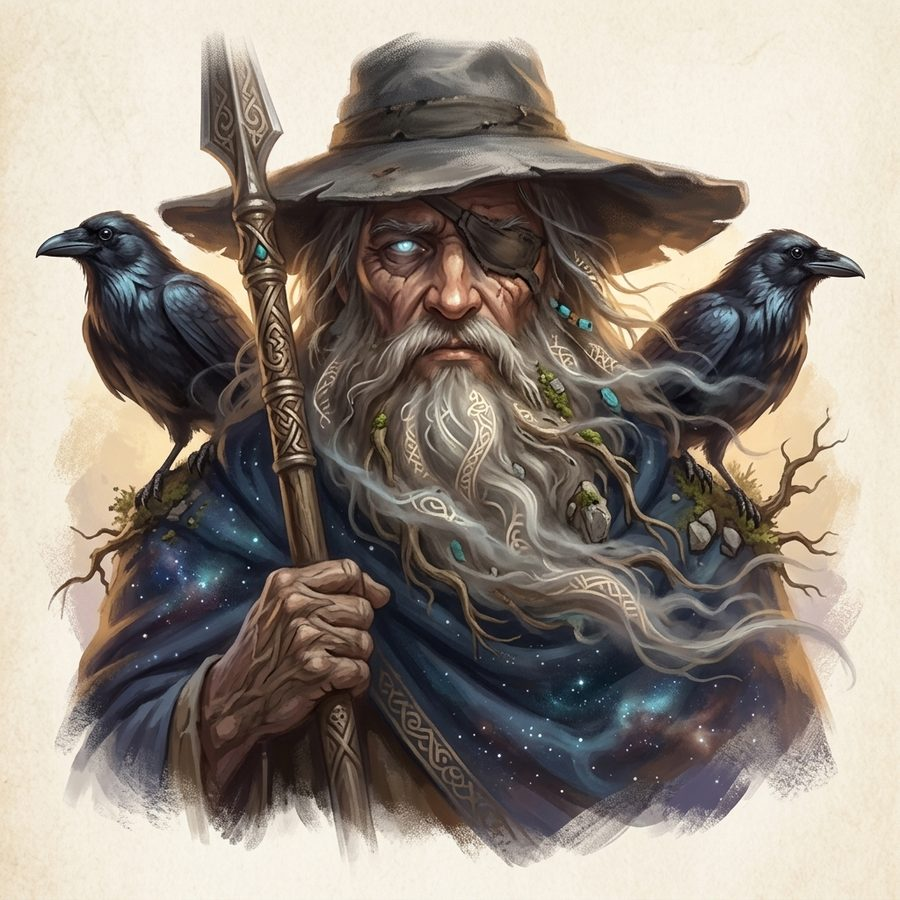
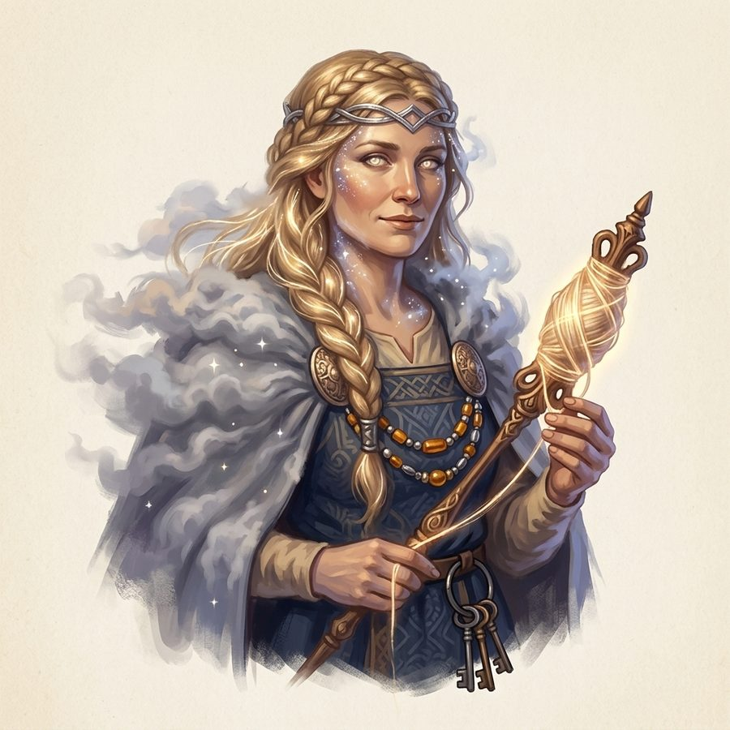
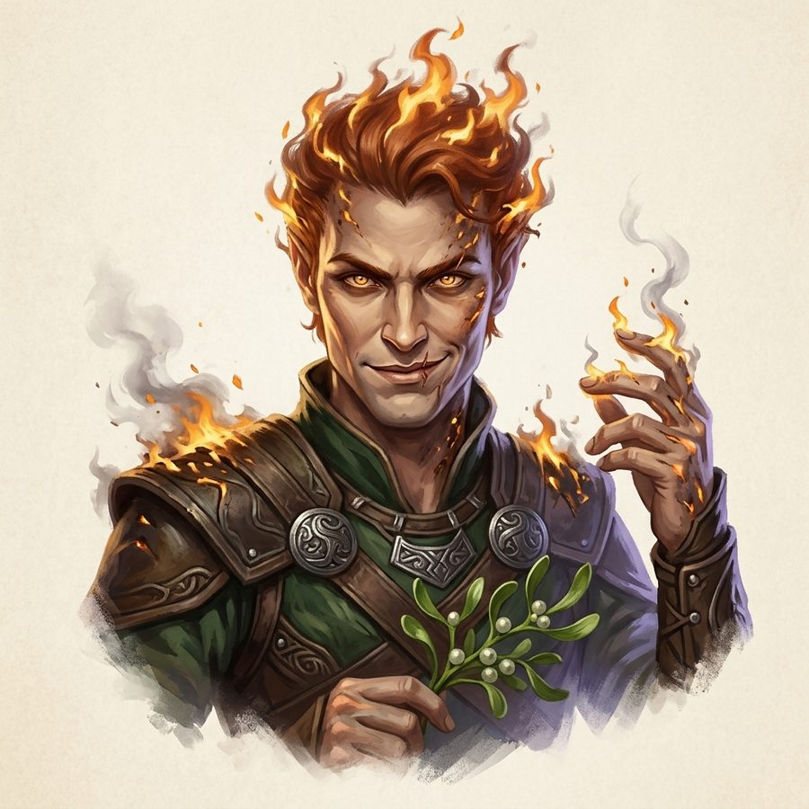
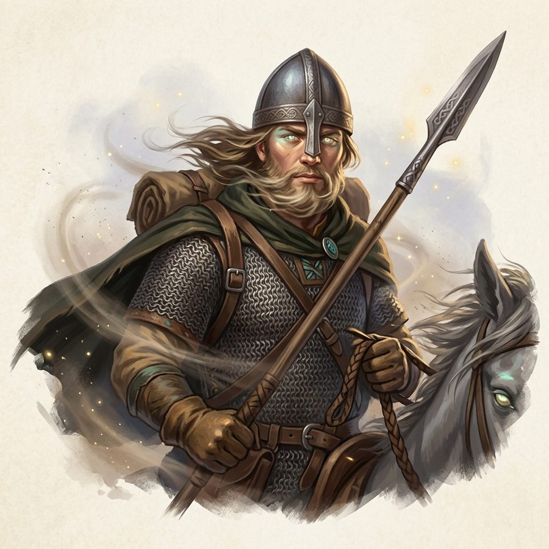
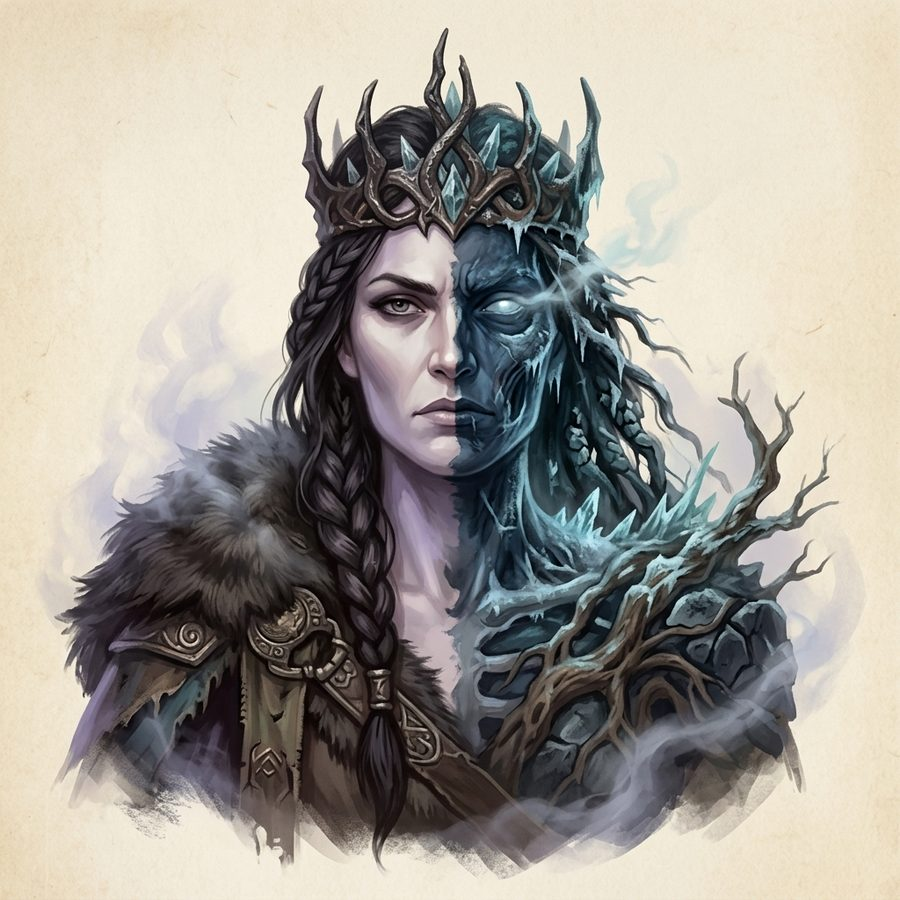

Noors · · 17 min lezen
De dood van Baldr
Hoe de mooiste van de goden stierf, en waarom de aarde beeft

In Asgard, de burcht van de goden, hoog boven de wereld van de mensen, woonde een god over wie niemand iets kwaads te zeggen had.
Zijn naam was Baldr.

Hij was de zoon van Odin, de oppergod, en van Frigg, de koningin van de goden. Snorri Sturluson, de IJslander die de oude verhalen zevenhonderd jaar geleden opschreef, zegt dat over hem alleen maar goed gesproken kon worden. Hij was zo mooi en zo stralend dat er licht van hem afstraalde. Er groeide een witte bloem in het noorden, de witste van alle planten, en die noemden de mensen 'Baldrs wenkbrauw'. Zo kun je je voorstellen hoe wit zijn haar en hoe licht zijn gezicht was. Hij was de wijste van de goden, de vriendelijkste en de best sprekende. Hij woonde in een hal die Breidablik heette, Breedglans, en daar mocht niets onreins binnenkomen.
Maar Baldr kreeg dromen.
De dromen
Het begon 's nachts. Baldr sliep slecht, en als hij sliep, droomde hij. Het waren zware, donkere dromen, en ze gingen allemaal over hetzelfde: over zijn eigen leven, en dat het in gevaar was.
Hij vertelde ze aan de goden. De goden en de godinnen kwamen bij elkaar, op de plek waar ze altijd raad hielden, onder de wereldboom Yggdrasil. Ze wilden weten wat die dromen betekenden. Waarom zou juist Baldr, de beste van hen allemaal, zulke dromen krijgen?
Toen stond Odin op.

Odin was de oudste van de goden en de wijste, de vader van alles. Hij had één oog. Het andere had hij lang geleden gegeven voor een slok uit de bron van de wijsheid. Twee raven vlogen elke dag voor hem over de wereld en vertelden hem 's avonds alles wat ze gezien hadden. Maar wat hij nu wilde weten, konden de raven hem niet vertellen. Daarvoor moest hij naar beneden.
Hij legde het zadel op Sleipnir, zijn grijze paard met acht benen, het snelste paard van de wereld. En hij reed naar beneden, naar Niflhel, de nevelige diepte waar de doden wonen.
Onderweg kwam hij een hond tegen, die uit het dodenrijk kwam. De hond had bloed op zijn borst, en hij blafte en huilde tegen Odin, lang en van ver. Maar Odin reed door, en de aarde dreunde onder de hoeven van Sleipnir, tot hij bij het hoge huis van Hel kwam.
Aan de oostkant van dat huis wist Odin een graf te liggen. Daar lag een völva begraven, een zieneres, een vrouw die de toekomst kon zien. Ze was al heel lang dood. Odin steeg af. Hij sprak toverwoorden over het graf, oude en machtige spreuken, tot de dode vrouw niet anders kon dan opstaan. Ze rees op uit de grond, grijs en koud, en ze sprak.
'Wie is die man die ik niet ken,' zei ze, 'die me deze moeizame weg heeft laten gaan? Er is sneeuw op me gevallen, en regen heeft me geslagen, en dauw heeft me nat gemaakt. Ik was al lang dood.'
'Ik heet Vegtam,' zei Odin. Dat betekent Zwerver. Hij zei niet wie hij was, want een zieneres uit het geslacht van de reuzen zou een god nooit iets vertellen. 'Ik ben de zoon van Valtam. Vertel jij me over de onderwereld, dan vertel ik jou over de wereld boven. Voor wie zijn die banken hier bekleed met ringen, en de verhogingen versierd met goud?'
Want overal in het huis van Hel zag hij het: er werd een feest voorbereid. Er werd een gast verwacht.
'Hier wordt voor Baldr de mede gebrouwen,' zei de zieneres. 'De heldere drank, met een schild erover. En de goden zijn hun hoop kwijt. Ik heb gesproken tegen mijn zin. Nu wil ik zwijgen.'
'Zieneres, zwijg niet,' zei Odin. 'Ik wil alles weten. Wie zal Baldr doden?'
'Hödr draagt de beroemde tak daarheen,' zei ze. 'Hij zal Baldr doden, en de zoon van Odin van het leven beroven. Ik heb gesproken tegen mijn zin. Nu wil ik zwijgen.'
Hödr. Dat was de broer van Baldr, die blind was.
'Zieneres, zwijg niet. Wie zal hem wreken?'
'Rind zal in het westen een zoon baren, Vali. Als hij één nacht oud is, zal hij vechten. Hij zal zijn handen niet wassen en zijn haar niet kammen, voordat hij de moordenaar van Baldr op de brandstapel heeft gebracht. Ik heb gesproken tegen mijn zin. Nu wil ik zwijgen.'
Odin stelde nog een vraag, een vreemde vraag over meisjes die zouden huilen, en aan die vraag herkende de zieneres hem.
'Jij bent Vegtam niet,' zei ze. 'Jij bent Odin, de oude tovenaar.'
'En jij bent geen zieneres,' zei Odin, 'en ook niet wijs. Jij bent de moeder van drie reuzen.'
'Rijd naar huis, Odin,' zei de dode vrouw, 'en wees maar trots. Niemand zal me meer komen opzoeken, tot Loki loskomt uit zijn boeien en het einde van de goden komt.'
En ze zonk terug in haar graf.
De eed van alle dingen

Frigg wist niet wat Odin gehoord had, of misschien wist ze het wel en wilde ze het niet geloven. Ze was de moeder van Baldr, en ze besloot dat haar zoon niets zou overkomen.
Frigg was de koningin van Asgard. Ze woonde in haar eigen hal, Fensalir, de Moerashallen, en ze wist het lot van alle mensen, al vertelde ze het nooit. Ze zat vaak te spinnen aan haar spinnenwiel, en de sterren die wij de Gordel van Orion noemen, noemden de mensen in het noorden het spinnenwiel van Frigg.
Ze ging de hele wereld rond, en ze liet alles zweren.
Ze liet het vuur zweren dat het Baldr niet zou verbranden. Ze liet het water zweren dat het hem niet zou verdrinken. Ze liet het ijzer zweren, en alle metalen, dat ze hem niet zouden snijden. Ze liet de stenen zweren, en de aarde, en de bomen. Ze liet de ziektes zweren, en de dieren, en de vogels, en het gif, en de slangen. Alles zwoer. Niemand wilde Baldr kwaad doen. Alles in de wereld hield van hem.
Toen dat gedaan was en iedereen het wist, werd het een spel.
Op de plek waar de goden bij elkaar kwamen, het Thing, ging Baldr in het midden staan. En de andere goden schoten pijlen op hem af, en ze hakten naar hem met hun zwaarden, en ze gooiden stenen naar hem. En er gebeurde niets. De pijlen vielen voor zijn voeten. De zwaarden gleden langs hem heen. De stenen kaatsten van hem af. Baldr lachte, en de goden lachten, en ze vonden het allemaal een prachtig ding, een eer voor Baldr.
Een vrouw in Fensalir

Maar één van hen lachte niet. Dat was Loki.
Loki was geen echte god van de Asen. Hij was de zoon van een reus, maar hij was de bloedbroeder van Odin geworden, lang geleden, en daarom woonde hij in Asgard. Hij was knap om te zien, slim, grappig, en hij kon elke gedaante aannemen. Hij had de goden vaak in de problemen gebracht, en er ook vaak weer uitgehaald. Maar er zat iets in hem dat steeds kwaadaardiger werd. Snorri noemt hem 'de lasteraar van de goden', en 'de schande van goden en mensen'.
Het beviel Loki niet dat Baldr nergens pijn van had.
Hij ging naar Fensalir, naar Frigg. Maar hij ging niet als Loki. Hij veranderde zichzelf in een vrouw, een oude vrouw die toevallig langskwam.
'Weet jij wat de Asen daar op het Thing aan het doen zijn?' vroeg Frigg.
'Ze schieten allemaal op Baldr,' zei de vrouw. 'En hij krijgt geen schrammetje.'
'Wapens en bomen kunnen Baldr niets doen,' zei Frigg trots. 'Ik heb ze allemaal laten zweren.'
'Hebben alle dingen gezworen om Baldr te sparen?' vroeg de vrouw.
Frigg glimlachte. 'Er groeit één scheutje,' zei ze, 'helemaal alleen, ten westen van het Walhalla. Het heet maretak. Dat vond ik te jong om een eed van te vragen.'
De vrouw liep weg.
Toen ze buiten was, werd ze weer Loki. Hij ging naar het westen van het Walhalla, waar de maretak groeide, een klein groen plantje dat niet in de grond wortelt maar hoog in een boom, op een tak. Hij trok het los. Hij maakte er een pijl van, of een speer, een rechte scherpe staak. En hij ging naar het Thing.
De blinde schutter
Op het Thing ging het spel nog altijd door. Baldr stond in het midden. Om hem heen stonden de goden in een kring. Ze lachten en schoten en gooiden.
Maar buiten de kring stond iemand alleen. Dat was Hödr, de broer van Baldr. Hij was blind, en hij deed niet mee.
Loki ging naast hem staan.
'Waarom schiet jij niet op Baldr?' vroeg hij.
'Omdat ik niet zie waar Baldr staat,' zei Hödr. 'En ook omdat ik geen wapen heb.'
'Doe toch mee,' zei Loki vriendelijk. 'Doe zoals de anderen, en bewijs Baldr ook eer. Ik zal je wijzen waar hij staat. Schiet met dit takje.'
Hij gaf Hödr de maretak in zijn hand. Hij zette hem in de goede richting. Hij wees.
Hödr schoot.
De pijl vloog door Baldr heen, en hij viel dood op de aarde. En dat was het grootste ongeluk dat ooit onder goden en mensen gebeurd is.
Stilte
Toen Baldr gevallen was, konden de goden geen woord zeggen. Ze konden hem niet eens aanraken. Hun handen hingen langs hun lichaam. Ze keken elkaar aan, en ze wisten allemaal wie dit gedaan had. Maar niemand kon wraak nemen, want het Thing was een heilige plek, waar geen bloed vergoten mocht worden.
Toen ze probeerden te spreken, kwam er geen woord. Er kwam alleen huilen. Ze huilden zo, dat niemand met woorden tegen een ander kon zeggen hoe verdrietig hij was.
Odin had het meest verdriet van allemaal. Want hij begreep het best hoe groot het verlies was voor de goden. Hij wist wat de zieneres hem verteld had. Hij wist dat dit het begin was van het einde.
Wie rijdt er naar Hel?
Toen de goden weer een beetje tot zichzelf kwamen, sprak Frigg.
'Wie van de Asen,' zei ze, 'wil al mijn liefde en mijn gunst voor zichzelf hebben? Die moet de weg naar Hel rijden en zien of hij Baldr kan vinden. Hij moet Hel een losprijs aanbieden, als zij Baldr naar huis wil laten gaan, naar Asgard.'

Er stapte een god naar voren. Het was Hermod de Dappere, ook een zoon van Odin, een broer van Baldr. Hij was de bode van de goden, en hij was snel en onverschrokken.
Ze haalden Sleipnir, het paard van Odin met de acht benen, dat de weg naar beneden kende. Hermod sprong in het zadel en galoppeerde weg.
De brandstapel op zee
De goden namen het lichaam van Baldr en droegen het naar de zee.
Daar lag zijn schip, Hringhorni. Het was het grootste van alle schepen. Ze wilden het te water laten en er de brandstapel van Baldr op bouwen. Maar het schip bewoog niet. Hoe de goden ook duwden en trokken, het bleef liggen op de rollen.
Dus stuurden ze een bode naar Jotunheim, het land van de reuzen, naar een reuzin die Hyrrokkin heette.
Ze kwam rijden op een wolf, en als teugels gebruikte ze levende adders. Ze sprong af. Odin riep vier berserkers, zijn wildste krijgers, om op het beest te passen. Maar ze konden het niet houden, tot ze het tegen de grond hadden gegooid.
Hyrrokkin liep naar de voorsteven van het schip en gaf het een duw. Eén duw, en het schip schoot naar voren, zodat er vuur uit de rollen sprong en alle landen beefden. Thor, de dondergod, werd boos dat een reuzin dat kon. Hij greep zijn hamer en wilde haar meteen de schedel inslaan. Maar de goden vroegen hem om vrede voor haar, en hij liet zijn hamer zakken.
Toen werd het lichaam van Baldr op het schip gedragen.
Zijn vrouw Nanna stond erbij en keek toe. En toen ze haar man op de brandstapel zag liggen, brak haar hart van verdriet, en ze stierf. Ze legden haar naast hem, op de brandstapel. Het vuur werd aangestoken.
Thor stond bij het vuur en zegende het met zijn hamer Mjölnir. Precies op dat moment liep er een dwerg langs zijn voeten, die Litr heette. Thor gaf hem een schop, zodat hij in het vuur viel, en hij verbrandde mee. Waarom, zegt het verhaal niet. Misschien stond hij in de weg. Thor was niet iemand die lang nadacht.
Van overal kwamen ze naar de verbranding kijken. Odin kwam, en met hem Frigg en de walkuren en zijn raven. Freyr kwam in zijn wagen, getrokken door het everzwijn Gouden Borstels. Heimdall, de wachter van de goden, kwam op zijn paard Goudtop. Freya kwam in haar wagen met katten ervoor. Zelfs de reuzen kwamen, de rijpreuzen en de bergreuzen, om afscheid te nemen van Baldr.
Odin legde zijn ring op de brandstapel, de gouden ring Draupnir. Dat was een wonderlijke ring: elke negende nacht druppelden er acht nieuwe gouden ringen uit, net zo zwaar als hij. Het paard van Baldr werd naar het vuur geleid, met al zijn tuig, en ging mee.
En het schip dreef de zee op, brandend, met de stralende god erop, tot het in de schemering verdween.
Negen nachten
Hermod reed intussen naar beneden. Negen nachten reed hij door donkere dalen, zo diep dat hij niets kon zien. Er was geen licht, geen ster, geen maan. Alleen het geluid van de hoeven van Sleipnir in het duister.
Toen kwam hij bij de rivier Gjöll, de grens van het dodenrijk. Er lag een brug over, overdekt met glanzend goud. En op de brug stond een meisje dat Modgud heette. Zij bewaakte de brug.
'Wie ben jij, en uit welk geslacht kom je?' vroeg ze. 'Gisteren reden er vijf scharen dode mannen over deze brug. Maar onder jou alleen dreunt de brug net zo hard als onder hen allemaal. En je hebt niet de kleur van de doden. Waarom rijd jij hier op de weg naar Hel?'
'Ik moet naar Hel rijden om Baldr te zoeken,' zei Hermod. 'Heb jij Baldr misschien gezien op de weg naar Hel?'
'Baldr is over de brug van Gjöll gereden,' zei Modgud. 'Naar beneden en naar het noorden ligt de weg naar Hel.'
Hermod reed verder, naar beneden en naar het noorden, tot hij bij de poort van Hel kwam. De poort was dicht. Hij steeg af, trok de singels van zijn zadel strak, ging weer zitten en gaf Sleipnir de sporen. En het paard sprong zo hoog over de poort dat het hem nergens raakte.
Hermod reed naar de hal en ging naar binnen. En daar, op de hoge zetel, op de ereplaats, zat Baldr, zijn broer.
Hel

Hermod bleef die nacht in de hal.
De meesteres van dat huis was Hel. Ze was de dochter van Loki en een reuzin, en Odin had haar lang geleden naar beneden gestuurd om over de doden te heersen, over iedereen die stierf aan ziekte of ouderdom. Ze was half levend, half dood. De ene helft van haar was de kleur van levend vlees, de andere helft blauwzwart, en ze keek altijd somber en streng.
's Ochtends vroeg Hermod haar of Baldr met hem mee naar huis mocht rijden. Hij vertelde hoe groot het verdriet was bij de Asen. Hoe ze huilden en niet konden spreken.
Hel dacht na.
'Dan zullen we het op deze manier op de proef stellen,' zei ze, 'of Baldr echt zo door iedereen geliefd is als ze zeggen. Als alle dingen in de wereld, levend en dood, om hem huilen, dan mag hij teruggaan naar de Asen. Maar hij blijft bij Hel als er ook maar één is die weigert, die niet wil huilen.'
Hermod stond op. Baldr liep met hem mee naar buiten. Hij gaf hem de ring Draupnir, die met hem was verbrand, en zei: geef die aan Odin, als herinnering. Nanna gaf hem een linnen hemd mee voor Frigg, en nog meer geschenken, en een gouden ring voor Fulla, de dienares van Frigg.
Toen reed Hermod terug, de negen nachten door het donker, over de gouden brug, naar Asgard.
De wereld huilt
Hermod vertelde alles wat hij gezien en gehoord had. En de goden stuurden boden over de hele wereld, met één verzoek: huil Baldr los uit Hel.
En alles huilde.
De mensen huilden. De dieren huilden. De aarde huilde, en de stenen, en de bomen, en alle metalen. Snorri zegt: je hebt het zelf vast weleens gezien, hoe die dingen huilen als ze uit de vorst in de warmte komen. Als een steen of een stuk ijzer 's ochtends van binnen naar buiten wordt gebracht, wordt hij nat en druppelt hij. Dat is huilen om Baldr.
De boden gingen terug naar huis. Ze hadden hun werk goed gedaan. Overal hadden ze tranen gezien.
Maar onderweg, in een grot, zat een reuzin. Ze zei dat ze Thökk heette. De boden vroegen haar of ook zij Baldr uit Hel wilde huilen.
Ze gaf antwoord in een kort, hard rijmpje:
Thökk huilt met droge tranen om Baldrs begrafenis. Levend of dood, ik had niets aan hem. Laat Hel houden wat ze heeft.
En de mensen denken dat die reuzin Loki was, de zoon van Laufey, die van alle wezens het meeste kwaad onder de Asen heeft aangericht.
Zo bleef Baldr bij Hel.
De zalm in de waterval
Nu waren de goden zo kwaad op Loki als je kunt verwachten. En Loki wist dat.
Hij vluchtte en verborg zich in de bergen. Daar bouwde hij een huis met vier deuren, één in elke richting, zodat hij vanuit het huis alle kanten op kon kijken en iedereen kon zien aankomen. Overdag veranderde hij zichzelf vaak in een zalm, en dan verstopte hij zich in een waterval die Franangur heette. Daar lag hij in het schuimende water na te denken: wat voor list zouden de goden verzinnen om hem in de waterval te vangen?
Als hij in zijn huis zat, nam hij linnen garen en knoopte er mazen van, zoals een net. Hij was de eerste die een net maakte. Er brandde een vuur voor hem.
Maar Odin zat op Hlidskjalf, zijn hoge zetel, vanwaar hij over de hele wereld kan kijken, en hij zag waar Loki was. De goden kwamen eraan. Loki zag ze en sprong op. Hij gooide het net in het vuur en rende naar buiten, de rivier in.
De goden kwamen bij het huis. Als eerste ging Kvasir naar binnen, de wijste van allemaal. In het vuur zag hij de witte as liggen, waar het net verbrand was, en hij begreep dat dat een ding moest zijn om vis mee te vangen. Hij vertelde het de anderen. Ze gingen meteen aan het werk en maakten een net, precies zoals ze aan de as konden zien dat Loki het gemaakt had.
Ze gingen met het net naar de waterval. Thor hield het ene eind vast, en alle andere goden het andere, en ze trokken het door het water. Maar Loki zwom voor het net uit en ging plat tussen twee stenen liggen. Het net gleed over hem heen, en de goden voelden alleen dat er iets levends was.
Ze gingen nog eens terug naar de waterval. Nu bonden ze iets zwaars aan het net, zodat er niets onderdoor kon. Loki zwom voor het net uit. Maar toen hij zag dat de zee dichtbij was, sprong hij over het touw van het net en zwom terug, de waterval in.
Nu zagen de goden waar hij heen ging. Ze gingen weer naar boven, naar de waterval. Ze verdeelden zich in twee groepen, aan beide oevers. Thor waadde midden door de rivier. Zo trokken ze naar de zee.
Loki had nu nog twee keuzes. De zee in zwemmen, en dat was levensgevaarlijk. Of weer over het net springen. Hij sprong, zo snel als hij kon, over het touw.
Thor greep naar hem. Hij kreeg hem te pakken, maar de zalm gleed door zijn hand, tot Thors vuist zich sloot vlak boven de staart. En daarom is een zalm aan het achtereind zo smal.
De boeien
Loki was gevangen, en voor hem was er geen genade. Ze brachten hem naar een grot. Ze namen drie platte stenen, zetten die op hun kant en boorden een gat in elke steen.
Toen haalden ze de zonen van Loki, Vali en Narfi. De goden veranderden Vali in een wolf, en de wolf verscheurde zijn broer Narfi. Met de darmen van Narfi bonden ze Loki vast over de drie stenen: één onder zijn schouders, één onder zijn middel, één onder zijn knieën. En die boeien werden ijzer.
Skadi, de reuzin van de bergen, nam een giftige slang en hing hem op boven het gezicht van Loki, zodat het gif van de slang op zijn gezicht zou druppelen.
Maar Sigyn, de vrouw van Loki, bleef bij hem. Ze staat naast hem en houdt een schaal onder het gif. Elke druppel vangt ze op. En als de schaal vol is, moet ze weglopen om hem leeg te gooien. En in die tijd druppelt het gif op het gezicht van Loki. Dan kronkelt hij zo hevig, dat de hele aarde beeft.
Dat noemen wij een aardbeving.
Daar ligt Loki nog steeds, in de grot, geboeid, tot het einde van de goden.
Na het einde
Maar dit is niet helemaal het einde van het verhaal.
Want de zieneres in het graf had gezegd: niemand zal me meer komen opzoeken, tot Loki loskomt uit zijn boeien. En hij komt los. In het grote gedicht over het begin en het einde van de wereld, de Völuspá, het Lied van de Zieneres, staat hoe het zal gaan. Op een dag breken de boeien. Loki komt vrij, en hij stuurt een schip vol reuzen en doden naar de laatste strijd. De wolf breekt los, de slang komt uit de zee, de zon wordt verslonden. Odin valt, en Thor valt, en de wereld zinkt in de zee en verbrandt. Dat heet Ragnarök, het lot van de goden.
Maar daarna, zegt de zieneres, rijst er een nieuwe aarde op uit de zee, groen en mooi. Het water valt in watervallen naar beneden, en een arend vliegt erboven om vissen te vangen. Op de akkers groeit graan dat niemand gezaaid heeft.
En dan komt Baldr terug. Hij komt terug uit het rijk van Hel, en Hödr komt met hem mee, de blinde broer die hem doodde. Samen gaan ze wonen in de oude hallen van Odin, verzoend.
Al het onheil zal goed worden, zegt de zieneres. Baldr komt terug.
Achtergrond
Waar komt dit verhaal vandaan? Uit IJsland. Rond 1220 schreef de IJslandse dichter en politicus Snorri Sturluson een handboek voor jonge dichters, de Proza-Edda, waarin hij de oude verhalen over de goden navertelde. IJsland was toen al tweehonderd jaar christelijk, maar de dichters moesten de oude verhalen nog kennen, omdat de gedichten vol zaten met verwijzingen ernaar. Het grootste deel van dit verhaal komt van Snorri. Het stuk over Odin en de dode zieneres komt uit een veel ouder gedicht, Baldrs draumar, 'De dromen van Baldr', dat in een handschrift uit rond 1300 bewaard is gebleven. Het slot komt uit de Völuspá.
Twee Vali's. In het gedicht is Vali een zoon van Odin en Rind, die op zijn eerste levensdag Hödr doodt om Baldr te wreken. Bij Snorri heet een van de zonen van Loki ook Vali, de zoon die in een wolf verandert. Het is niet duidelijk of dat een vergissing is van Snorri of van een overschrijver. In dit verhaal staan ze allebei, want ze staan allebei in de bron. In de stamboom staat alleen de Vali van Odin.
Een heel ander verhaal. De Deense geschiedschrijver Saxo Grammaticus vertelde rond 1200 een heel andere versie. Bij hem is Balderus een halfgod en Høtherus een gewone, niet blinde held. Ze vechten om dezelfde vrouw, Nanna, en Høtherus doodt Balderus met een toverzwaard. Wat de oudste vorm van het verhaal was, weet niemand.
De maretak. Maretak groeit in IJsland eigenlijk niet. Waarschijnlijk kenden de oudste vertellers het plantje uit het zuiden, uit Scandinavië of nog verder weg. Sommige onderzoekers denken dat het oorspronkelijk een zwaard was, mistilteinn, dat pas later een plant werd. Hoe dan ook: wij kussen nu onder de maretak, en dat heeft er waarschijnlijk niets mee te maken.
Loki. Er zijn maar heel weinig sporen dat Loki ooit vereerd werd. Hij is het grote raadsel van de Noorse mythologie: half god, half reus, helper en vijand tegelijk. In de oudere verhalen is hij vooral een grappenmaker die de goden in en uit de problemen helpt. In het verhaal van Baldr wordt hij voor het eerst echt kwaadaardig.
Bronnen
- Snorri Sturluson, Proza-Edda, Gylfaginning, hoofdstukken 49 en 50, vertaling Arthur Gilchrist Brodeur (1916), via sacred-texts.com
- Baldrs draumar, vertaling Henry Adams Bellows (1923), via sacred-texts.com
- Völuspá, strofen 59-62, voor het slot
- Váli, Wikipedia, over de twee Vali's